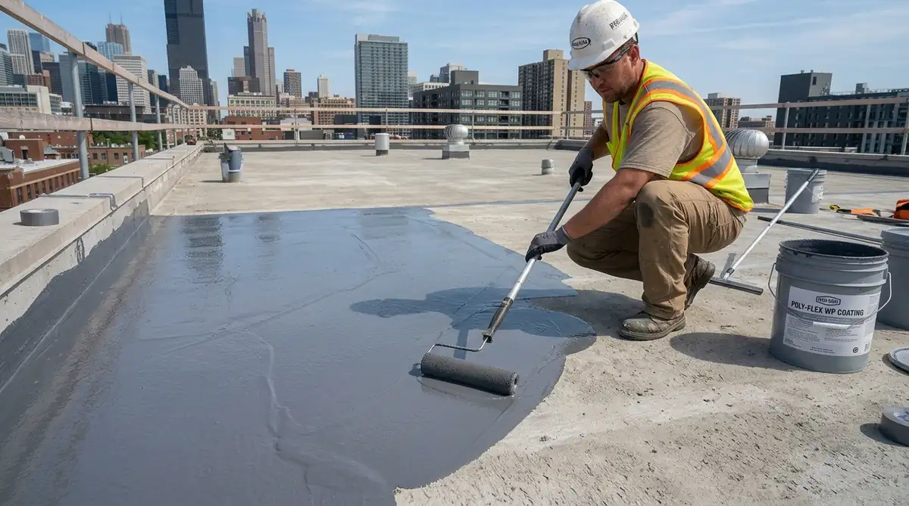

1. Komparasi: Membran Bakar vs Polyurethane (PU) Liquid Coating
Tabel perbandingan daya tahan, fleksibilitas elongasi, dan skenario pemakaian terbaik pada dak beton.
| Parameter Teknis | Waterproofing Membran Bakar Bitumen | Waterproofing Polyurethane (PU) Coating |
|---|---|---|
| Bentuk Fisik Material | Gulungan lembaran aspal tebal 3–4 mm | Cairan kental resin elastis (Multi-layer) |
| Metode Pemasangan | Dipanaskan dengan torch api gas LPG | Dilabur kuas / roll / airless spray |
| Elastisitas (Elongation) | 150% – 250% (Sedang) | 400% – 800% (Sangat Tinggi) |
| Ketahanan UV Sinar Matahari | Sangat tinggi (varian mineral granular) | Tinggi (varian aliphatic PU top coat) |
| Sambungan Lapisan | Ada overlap sambungan antar roll (min. 10 cm) | Mulus tanpa celah sambungan (seamless) |
| Area Penggunaan Ideal | Rooftop terbuka luas, roof garden, dak komersial | Dak rumah hunian, balkon, area banyak lekukan |
| Estimasi Usia Pakai | 10 – 15 Tahun | 7 – 12 Tahun |
| Estimasi Biaya Pasang/m² | Rp 135.000 – Rp 220.000 / m² | Rp 110.000 – Rp 195.000 / m² |
- Buat sudut melengkung segitiga (chamfer fillet) 5x5 cm di setiap pertemuan lantai dan dinding parapet dengan semen aditif.
- Pastikan kemiringan screed minimal 1-2% mengarah lurus ke lubang pipa roof drain tanpa ada cekungan air.
- Gunakan kawat loket wiremesh tipis saat memasang screed proteksi pelindung di atas waterproofing.
2. 4 Langkah Krusial Aplikasi Dak Beton Bebas Bocor
- Persiapan Permukaan & Chamfering: Bersihkan dak dari lumut, debu, dan sisa coran lepas. Buat sudut melengkung segitiga di pertemuan dinding parapet.
- Pembuatan Kemiringan Screed (Slope Min 1-2%): Arahkan aliran air hujan menuju saringan pipa roof drain pembuangan.
- Pelapisan Primer & Waterproofing: Aplikasikan primer untuk membuka pori beton, lalu lapisi waterproofing utama 2–3 layer secara silang (cross-coat).
- Ponding Test 24 Jam & Proteksi Screed: Genangi dak dengan air 24 jam. Jika tidak bocor, lapisi plester pelindung akhir.

Pelapisan waterproofing polyurethane elastis pada pertemuan lantai dan dinding parapet.
Pertanyaan yang Sering Diajukan (FAQ)
Kesimpulan Praktis
Perencanaan konstruksi yang terperinci dan didukung oleh dokumen teknis presisi adalah kunci utama keberhasilan pembangunan yang bebas risiko overbudget dan deviasi struktur. Menyerahkan proyek kepada tim profesional memastikan kepatuhan standar hukum, mutu pengerjaan prima, dan efisiensi waktu pelaksanaan.
Ambil keputusan tepat sekarang juga untuk melindungi investasi bangunan Anda. Dapatkan rancangan arsitektur terbaik dan estimasi biaya transparan bersama tim Kontraktor Bangunan.